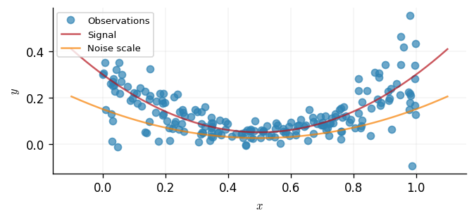
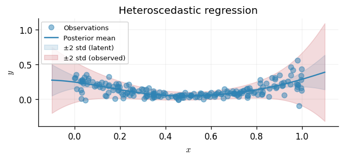
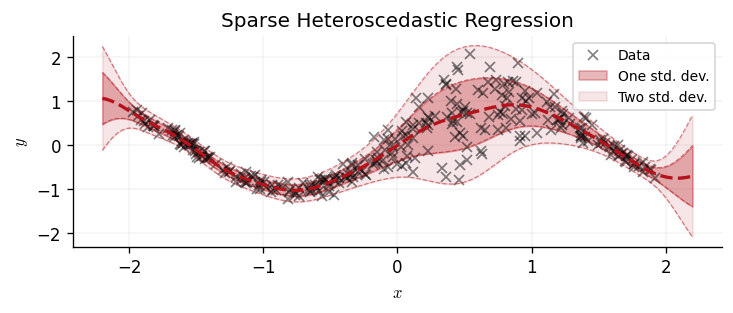

Heteroscedastic Inference
This notebook shows how to fit a heteroscedastic Gaussian processes (GPs) that allows one to perform regression where there exists non-constant, or input-dependent, noise.
Background
A heteroscedastic GP couples two latent functions: - A signal GP \(f(\cdot)\) for the mean response. - A noise GP \(g(\cdot)\) that maps to a positive variance \(\sigma^2(x) = \phi(g(x))\) via a positivity transform \(\phi\) (typically \({\rm exp}\) or \({\rm softplus}\)). Intuitively, we are introducing a pair of GPs; one to model the latent mean, and a second that models the log-noise variance. This is in direct contrast a homoscedastic GP where we learn a constant value for the noise.
In the Gaussian case, the observed response follows \(\(y \mid f, g \sim \mathcal{N}(f, \sigma^2(x)).\)\) Variational inference works with independent posteriors \(q(f)q(g)\), combining the moments of each into an ELBO. For non-Gaussian likelihoods the same structure remains; only the expected log-likelihood changes.
from jax import config
import jax.numpy as jnp
import jax.random as jr
import matplotlib as mpl
import matplotlib.pyplot as plt
import optax as ox
from examples.utils import use_mpl_style
import gpjax as gpx
from gpjax.likelihoods import (
HeteroscedasticGaussian,
LogNormalTransform,
SoftplusTransform,
)
from gpjax.variational_families import (
HeteroscedasticVariationalFamily,
VariationalGaussianInit,
)
# Enable Float64 for stable linear algebra.
config.update("jax_enable_x64", True)
use_mpl_style()
key = jr.key(123)
cols = mpl.rcParams["axes.prop_cycle"].by_key()["color"]
Dataset simulation
We simulate whose mean and noise levels vary with the input. We sample inputs \(x \sim \mathcal{U}(0, 1)\) and define the latent signal to be \(\(f(x) = (x - 0.5)^2 + 0.05;\)\) a smooth bowl-shaped curve. The observation standard deviation is chosen to be proportional to the signal, \(\(\sigma(x) = 0.5\,f(x),\)\) which yields the heteroscedastic generative model \(\(y \mid x \sim \mathcal{N}\!\big(f(x), \sigma^2(x)\big).\)\) This construction makes the noise small near the minimum of the bowl and much larger in the tails. We also create a dense test grid that we shall use later for visualising posterior fits and predictive uncertainty.
# Create data with input-dependent variance.
key, x_key, noise_key = jr.split(key, 3)
n = 200
x = jr.uniform(x_key, (n, 1), minval=0.0, maxval=1.0)
signal = (x - 0.5) ** 2 + 0.05
noise_scale = 0.5 * signal
noise = noise_scale * jr.normal(noise_key, shape=(n, 1))
y = signal + noise
train = gpx.Dataset(X=x, y=y)
xtest = jnp.linspace(-0.1, 1.1, 200)[:, None]
signal_test = (xtest - 0.5) ** 2 + 0.05
noise_scale_test = 0.5 * signal_test
noise_test = noise_scale_test * jr.normal(noise_key, shape=(200, 1))
ytest = signal_test + noise_test
fig, ax = plt.subplots()
ax.plot(x, y, "o", label="Observations", alpha=0.7, color=cols[0])
ax.plot(xtest, signal_test, label="Signal", alpha=0.7, color=cols[1])
ax.plot(xtest, noise_scale_test, label="Noise scale", alpha=0.7, color=cols[2])
ax.set_xlabel("$x$")
ax.set_ylabel("$y$")
ax.legend(loc="upper left")
<matplotlib.legend.Legend at 0x7f63a6e05a10>

For a homoscedastic baseline, compare this figure with the
Gaussian process regression notebook
(examples/regression.py), where a single latent GP is paired with constant
observation noise.
Prior specification
We place independent Gaussian process priors on the signal and noise processes:
\(\(f \sim \mathcal{GP}\big(0, k_f\big), \qquad g \sim \mathcal{GP}\big(0, k_g\big),\)\)
where \(k_f\) and \(k_g\) are stationary squared-exponential kernels with unit
variance and lengthscale of one. The noise process \(g\) is mapped to the variance
via the logarithmic transform in LogNormalTransform, giving
\(\sigma^2(x) = \exp\big(g(x)\big)\). The joint prior over \((f, g)\) combines with
the heteroscedastic Gaussian likelihood,
\(\(p(\mathbf{y} \mid f, g) = \prod_{i=1}^n
\mathcal{N}\!\big(y_i \mid f(x_i), \exp(g(x_i))\big),\)\)
to form the posterior target that we shall approximate variationally. The product
syntax signal_prior * likelihood used below constructs this augmented GP model.
# Signal and noise priors.
signal_prior = gpx.gps.Prior(
mean_function=gpx.mean_functions.Zero(),
kernel=gpx.kernels.RBF(),
)
noise_prior = gpx.gps.Prior(
mean_function=gpx.mean_functions.Zero(),
kernel=gpx.kernels.RBF(),
)
likelihood = HeteroscedasticGaussian(
num_datapoints=train.n,
noise_prior=noise_prior,
noise_transform=LogNormalTransform(),
)
posterior = signal_prior * likelihood
# Variational family over both processes.
z = jnp.linspace(-3.2, 3.2, 25)[:, None]
q = HeteroscedasticVariationalFamily(
posterior=posterior,
inducing_inputs=z,
inducing_inputs_g=z,
)
The variational family introduces inducing variables for both latent functions,
located at the set \(Z = \{z_m\}_{m=1}^M\). These inducing variables summarise the
infinite-dimensional GP priors in terms of multivariate Gaussian parameters.
Optimising the evidence lower bound (ELBO) corresponds to adjusting the means and
covariances of the variational posteriors \(q(f)\) and \(q(g)\) so that they best
explain the observed data whilst remaining close to the prior. For a deeper look at
these constructions in the homoscedastic setting, refer to the
Sparse Gaussian Process Regression
(examples/collapsed_vi.py) and
Sparse Stochastic Variational Inference
(examples/uncollapsed_vi.py) notebooks.
Optimisation
With the model specified, we minimise the negative ELBO, \(\(\mathcal{L} = \mathbb{E}_{q(f)q(g)}\!\big[\log p(\mathbf{y}\mid f, g)\big] - \mathrm{KL}\!\left[q(f) \,\|\, p(f)\right] - \mathrm{KL}\!\left[q(g) \,\|\, p(g)\right],\)\) using the Adam optimiser. GPJax automatically selects the tight bound of Lázaro-Gredilla & Titsias (2011) when the likelihood is Gaussian, yielding an analytically tractable expectation over the latent noise process. The resulting optimisation iteratively updates the inducing posteriors for both latent GPs.
# Optimise the heteroscedastic ELBO (selects tighter bound).
objective = lambda model, data: -gpx.objectives.heteroscedastic_elbo(model, data)
optimiser = ox.adam(1e-2)
q_trained, history = gpx.fit(
model=q,
objective=objective,
train_data=train,
optim=optimiser,
num_iters=10000,
verbose=False,
)
loss_trace = jnp.asarray(history)
print(f"Final regression ELBO: {-loss_trace[-1]:.3f}")
Final regression ELBO: 259.719
Prediction
After training we obtain posterior marginals for both latent functions. To make a
prediction we evaluate two quantities:
1. The latent posterior over \(f\) (mean and variance), which reflects uncertainty
in the latent function prior to observing noise.
2. The marginal predictive over observations, which integrates out both \(f\) and
\(g\) to provide predictive intervals for future noisy measurements.
The helper method likelihood.predict performs the second integration for us.
# Predict on a dense grid.
xtest = jnp.linspace(-0.1, 1.1, 200)[:, None]
mf, vf, mg, vg = q_trained.predict(xtest)
signal_pred, noise_pred = q_trained.predict_latents(xtest)
predictive = likelihood.predict(signal_pred, noise_pred)
fig, ax = plt.subplots()
ax.plot(train.X, train.y, "o", label="Observations", alpha=0.5)
ax.plot(xtest, mf, color="C0", label="Posterior mean")
ax.fill_between(
xtest.squeeze(),
(mf.squeeze() - 2 * jnp.sqrt(vf.squeeze())).squeeze(),
(mf.squeeze() + 2 * jnp.sqrt(vf.squeeze())).squeeze(),
color="C0",
alpha=0.15,
label="±2 std (latent)",
)
ax.fill_between(
xtest.squeeze(),
predictive.mean - 2 * jnp.sqrt(jnp.diag(predictive.covariance_matrix)),
predictive.mean + 2 * jnp.sqrt(jnp.diag(predictive.covariance_matrix)),
color="C1",
alpha=0.15,
label="±2 std (observed)",
)
ax.set_xlabel("$x$")
ax.set_ylabel("$y$")
ax.legend(loc="upper left")
ax.set_title("Heteroscedastic regression")
Text(0.5, 1.0, 'Heteroscedastic regression')

The latent intervals quantify epistemic uncertainty about \(f\), whereas the broader observed band adds the aleatoric noise predicted by \(g\). The widening of the orange band in the right half matches the ground-truth construction of the dataset.
Sparse Heteroscedastic Regression
We now demonstrate how the aforementioned heteroscedastic approach can be extended into sparse scenarios, thus offering more favourable scalability as the size of our dataset grows. To achieve this we defined inducing points for both the signal and noise processes. Decoupling these grids allows us to focus modelling capacity where each latent function varies the most. The synthetic dataset below contains a smooth sinusoidal signal but exhibits a sharply peaked noise shock, mimicking the situation where certain regions of the input space are far noisier than others.
# Generate data
key, x_key, noise_key = jr.split(key, 3)
n = 300
x = jr.uniform(x_key, (n, 1), minval=-2.0, maxval=2.0)
signal = jnp.sin(2.0 * x)
# Gaussian bump of noise
noise_std = 0.1 + 0.5 * jnp.exp(-0.5 * ((x - 0.5) / 0.4) ** 2)
y = signal + noise_std * jr.normal(noise_key, shape=(n, 1))
data_adv = gpx.Dataset(X=x, y=y)
Model components
We again adopt RBF priors for both processes but now apply a SoftplusTransform
to the noise GP. This alternative map enforces positivity whilst avoiding the
heavier tails induced by the log-normal transform. The HeteroscedasticGaussian
likelihood seamlessly accepts the new transform.
# Define model components
mean_prior = gpx.gps.Prior(
mean_function=gpx.mean_functions.Zero(),
kernel=gpx.kernels.RBF(),
)
noise_prior_adv = gpx.gps.Prior(
mean_function=gpx.mean_functions.Zero(),
kernel=gpx.kernels.RBF(),
)
likelihood_adv = HeteroscedasticGaussian(
num_datapoints=data_adv.n,
noise_prior=noise_prior_adv,
noise_transform=SoftplusTransform(),
)
posterior_adv = mean_prior * likelihood_adv
# Configure variational family
# The signal requires a richer inducing set to capture its oscillations, whereas the
# noise process can be summarised with fewer points because the burst is localised.
z_signal = jnp.linspace(-2.0, 2.0, 30)[:, None]
z_noise = jnp.linspace(-2.0, 2.0, 20)[:, None]
# Use VariationalGaussianInit to pass specific configurations
q_init_f = VariationalGaussianInit(inducing_inputs=z_signal)
q_init_g = VariationalGaussianInit(inducing_inputs=z_noise)
q_sparse = HeteroscedasticVariationalFamily(
posterior=posterior_adv,
signal_init=q_init_f,
noise_init=q_init_g,
)
The initialisation objects VariationalGaussianInit allow us to prescribe
different inducing grids and initial covariance structures for \(f\) and \(g\). This
flexibility is invaluable when working with large datasets where the latent
functions have markedly different smoothness properties.
# Optimize
objective_adv = lambda model, data: -gpx.objectives.heteroscedastic_elbo(model, data)
optimiser_adv = ox.adam(1e-2)
q_sparse_trained, _ = gpx.fit(
model=q_sparse,
objective=objective_adv,
train_data=data_adv,
optim=optimiser_adv,
num_iters=10000,
verbose=False,
)
# Plotting
xtest = jnp.linspace(-2.2, 2.2, 300)[:, None]
pred = q_sparse_trained.predict(xtest)
# Unpack the named tuple
mf = pred.mean_f
vf = pred.variance_f
mg = pred.mean_g
vg = pred.variance_g
# Calculate total predictive variance
# The likelihood expects the *latent* noise distribution to compute the predictive
# but here we can just use the transformed expected variance for plotting.
# For accurate predictive intervals, we should use likelihood.predict.
signal_dist, noise_dist = q_sparse_trained.predict_latents(xtest)
predictive_dist = likelihood_adv.predict(signal_dist, noise_dist)
predictive_mean = predictive_dist.mean
predictive_std = jnp.sqrt(jnp.diag(predictive_dist.covariance_matrix))
fig, ax = plt.subplots(figsize=(6, 2.5))
ax.plot(x, y, "x", color="black", alpha=0.5, label="Data")
# Plot total uncertainty (signal + noise)
ax.plot(xtest, predictive_mean, "--", color=cols[1], linewidth=2)
ax.fill_between(
xtest.squeeze(),
predictive_mean - predictive_std,
predictive_mean + predictive_std,
color=cols[1],
alpha=0.3,
label="One std. dev.",
)
ax.plot(xtest.squeeze(), predictive_mean - predictive_std, "--", color=cols[1], alpha=0.5, linewidth=0.75)
ax.plot(xtest.squeeze(), predictive_mean + predictive_std, "--", color=cols[1], alpha=0.5, linewidth=0.75)
ax.fill_between(
xtest.squeeze(),
predictive_mean - 2 * predictive_std,
predictive_mean + 2 * predictive_std,
color=cols[1],
alpha=0.1,
label="Two std. dev.",
)
ax.plot(xtest.squeeze(), predictive_mean - 2 * predictive_std, "--", color=cols[1], alpha=0.5, linewidth=0.75)
ax.plot(xtest.squeeze(), predictive_mean + 2 * predictive_std, "--", color=cols[1], alpha=0.5, linewidth=0.75)
ax.set_title("Sparse Heteroscedastic Regression")
ax.legend(loc="best", fontsize="small")
ax.set_xlabel("$x$")
ax.set_ylabel("$y$")
Text(0, 0.5, '$y$')

Takeaways
- The heteroscedastic GP model couples two latent GPs, enabling separate control of epistemic and aleatoric uncertainties.
- We support multiple positivity transforms for the noise process; the choice affects the implied variance tails and should reflect prior beliefs.
- Inducing points for the signal and noise processes can be tuned independently to balance computational budget against the local complexity of each function.
- The ELBO implementation automatically selects the tightest analytical bound available, streamlining heteroscedastic inference workflows.
System configuration
Author: Thomas Pinder
Last updated: Sat Jan 31 2026
Python implementation: CPython
Python version : 3.11.14
IPython version : 9.5.0
gpjax : 0.13.4
jax : 0.7.1
matplotlib: 3.10.6
optax : 0.2.5
Watermark: 2.5.0